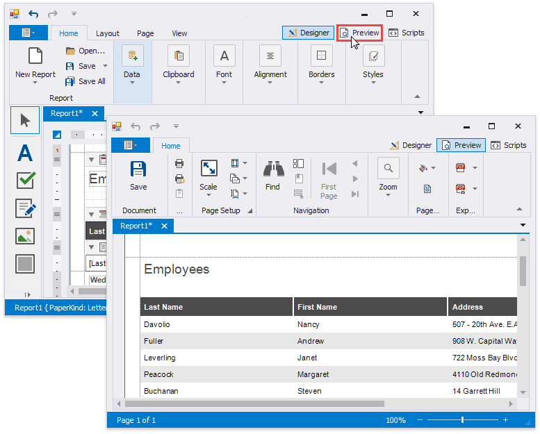
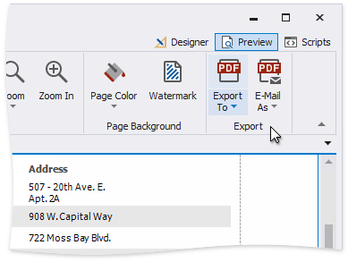
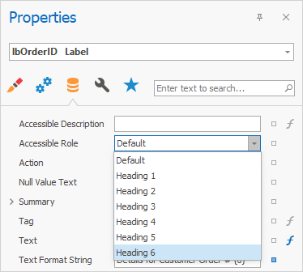
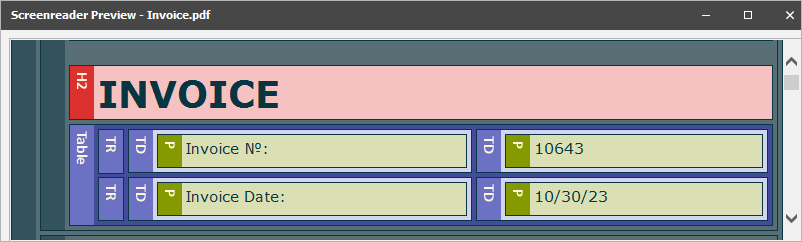
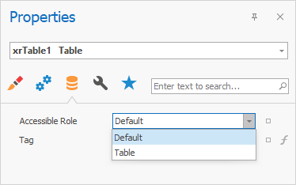
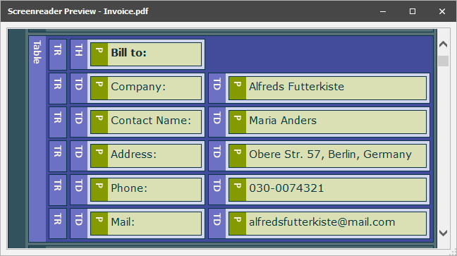
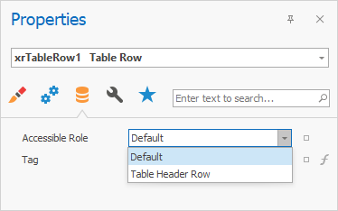
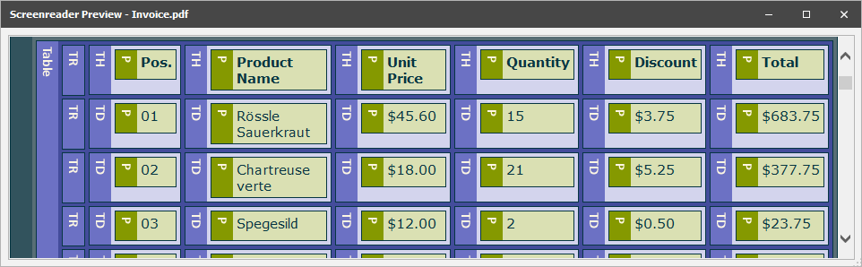
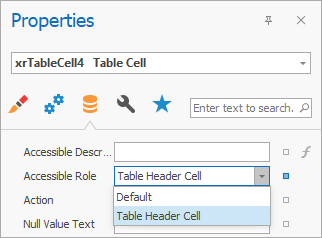

Preview, Print and Export Reports
Preview a Report
To switch a report to the print preview mode, click the Preview tab. You will see your report populated with data and broken down into pages, as specified.

Note
To learn more about the options available in the print preview mode, refer to the Print Preview for WinForms section of this documentation.
Print a Report
When in the Print Preview mode, you can print out your report using the appropriate menu and toolbar commands.

Export a Report
When in the Print Preview mode, you can export your report to files in different formats. The resulting files can either be saved to the hard drive or sent by e-mail.

The following documents describe the basics of report exporting and format-specific export options.
- Exporting from Print Preview
- PDF-Specific Export Options
- HTML-Specific Export Options
- MHT-Specific Export Options
- RTF-Specific Export Options
- XLS-Specific Export Options
- XLSX-Specific Export Options
- CSV-Specific Export Options
- TXT-Specific Export Options
- Image-Specific Export Options
Export a Report to PDF with Accessible Tags (PDF/UA Compatibility)
You can specify how Label, Table, Table Row, and Table Cell should be treated by screen readers in the exported PDF document.
When you export a report to PDF, the report elements have no role. Assistive software commonly treats such elements as HTML
Define Label Accessible Role
Set the control’s Accessible Role property to Heading 1 - Heading 6 before you export a report.

In the PDF Export Options dialog, set the PDF/UA Compatibility property to PDF/UA1 to conform the exported PDF document to PDF/UA specification. Then, export the report to PDF format.
The image below shows the result. Accessible Role is set to Heading 2, and the screen reader treats Label as a “level two” heading in the exported document:

Define Table Accessible Role
You can specify how Table should be treated by screen readers in the exported PDF document. For this, set the control's Accessible Role property to Table before you export a report.

In the PDF Export Options dialog, set the PDF/UA Compatibility property to PDF/UA1 to conform the exported PDF document to PDF/UA specification. Then, export the report to PDF format.
The image below shows the result. Accessible Role is set to Table, and the screen reader treats Table as a table in the exported document:

Define Table Row Accessible Role
You can specify how Table Row should be treated by screen readers in the exported PDF document.
Before you export a report, set the Table's Accessible Role property to Table to define a control as a table. Then, specify Table Row's Accessible Role:

In the PDF Export Options dialog, set the PDF/UA Compatibility property to PDF/UA1 to conform the exported PDF document to PDF/UA specification. Then, export the report to PDF format.
The image below shows the result. Table Row's Accessible Role is set to Table Header Row, and the screen reader treats Table Row as a header row of the table in the exported document:

Define Table Cell Accessible Role
Before you export a report, set the Table's Accessible Role property to Table to define a control as a table. Then, specify the Table Cell's Accessible Role property:

Note
Accessible Role is not in effect for cells merged with the Cell's Row Span property.
In the PDF Export Options dialog, set the PDF/UA Compatibility property to PDF/UA1 to conform the exported PDF document to PDF/UA specification. Then, export the report to PDF format.
The image below shows the result. Table Cell's b is set to Table Header Cell, and the screen reader treats Table Cell with "Bill to:" text as a header cell in the exported document: